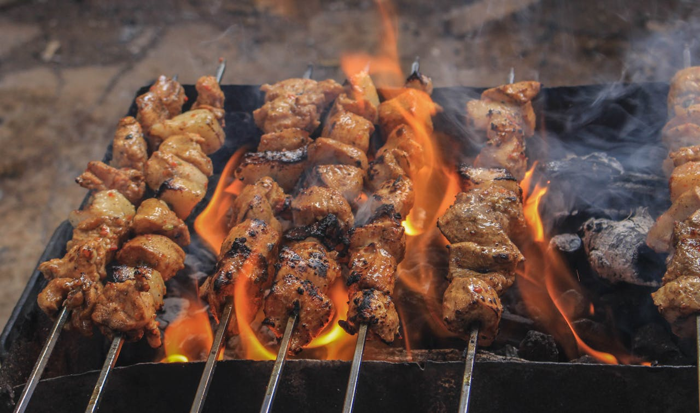
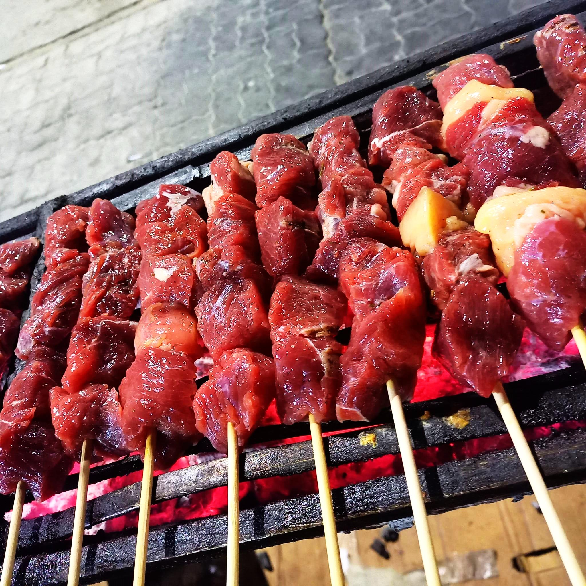

Espetinhos Zé Carlos
Sobre nós
Criado em 2008, o negócio de venda de espetinhos, gerido por Zé Carlos e sua esposa Valdênia, continua até os dias atuais, distribuindo churrasco de sabor esplêndido com o melhor preço da região!
Uma questão de sabor
Esses são alguns dos motivos, de nossa espetaria estar a bastante tempo no mercado!
1. Qualidade do produto
desde o início buscando trazer os melhores produtos e a melhor qualidade do setor
2. Preço
entendemos sempre a situação financeira do momento, deixando o preço voltado para atendermos todos os tipos de clientes
3. Atendimento excelente
e por ultimo mas não menos importantes, nossa equipe de atendimento nunca deixa a desejar, sempre tratamos bem todos os clientes, para que a experiência seja sempre a melhor possível